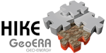
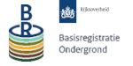
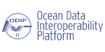
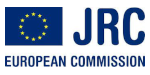
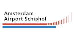
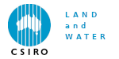

As a MSc in Physical Geography who strayed into Geo-IT and later spatial data analysis/harmonization and logical/semantic modeling, I have been involved in many (geo)data projects all over the world.
Some examples of the projects I am most fond of are linked below. Click on the logos for a preview and links to the official project websites (where available), or on the colored countries on the map that I had the pleasure to walk around in for photographic proof...

My responsibilities included: Communication with surveys, data-analysis, harmonization, modeling, transformation and visualizationOfficial project website here.')" onMouseOver="this.style.cursor='pointer'" border="5">

My responsibilities included: Communication with potential users, data analysis and logical data modeling.Official project website here.')" onMouseOver="this.style.cursor='pointer'" border="5"> My responsibilities included: Data analysis, cleaning and development of scale-dependent visualization of high-resolution point data.
Official project website here.')" onMouseOver="this.style.cursor='pointer'" border="5">

My work included: Analysis and harmonization of Dutch borehole data and grain-size measurements to global standards, prototyping on the use of Sensor Observation Services (SOS) and extension of controlled vocabularies for oceanographic research.Official project website here.')" onMouseOver="this.style.cursor='pointer'" border="5">

Official INSPIRE website here.')" onMouseOver="this.style.cursor='pointer'" border="5">
My work included: Data analysis, logical and technical modeling, database model implementation and data migration.')" onMouseOver="this.style.cursor='pointer'" border="5"> My work included: Data migration between formats and systems and software development to streamline the processes.')" onMouseOver="this.style.cursor='pointer'" border="5">
My work included: Modeling of the underwater light climate and field collection of ground truth measurements for remote assessment of coastal water quality and coral bleaching.Remote Sensing group website here.')" onMouseOver="this.style.cursor='pointer'" border="5">